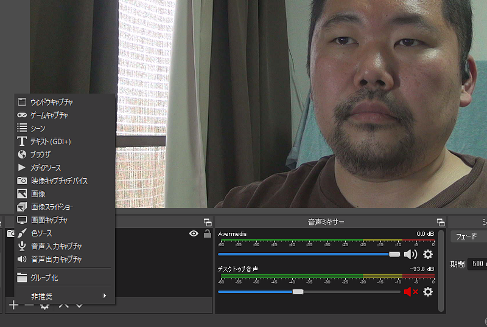
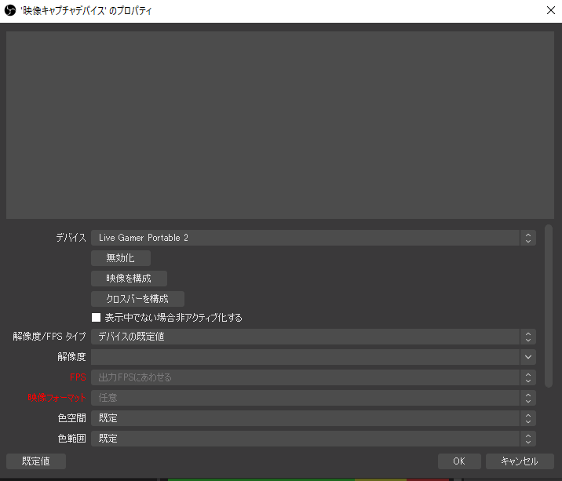
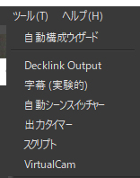
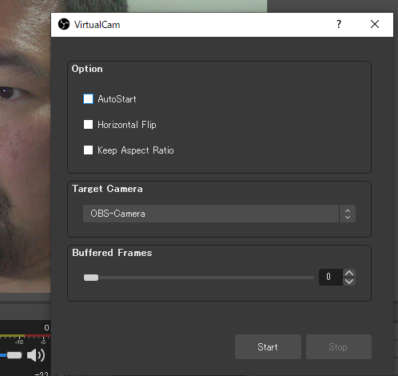
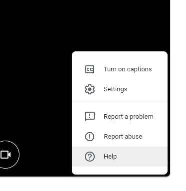
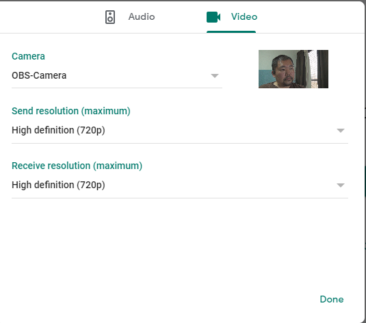

ビデオカメラとGoogle Meetの相性がよくない場合の対処 with OBS
ビデオカメラとGoogle Meetの相性がよくない場合の対処 with OBS
家でビデオ会議をするようになって、画質と音質を向上させようとしてたいところ、Webカメラの購入の波に乗り遅れてしまった。そのため、家にあったSonyの HDR-CX590 をカメラとして利用しつつzoom/Google Meetを使っていたのだが、突然使えなくなってしまったため、ちょっとだけ工夫する必要があった。これはその記録である
2020年5月11日ごろまで、全てうまくいっていたのである。ふつうに以下のようなデータの流れでミーティングをやれていた。映像ソースは前述のHDR-CX590、それをHDMIケーブルで AVerMediaのAVT-C878につなげて、そこからUSBでWindowsマシンにいれていた。
Amazon.co.jp： AVerMedia Live Gamer Portable 2 Plus、4 Kパススルー、フルHD 1080p60…amzn.to
これでGoogle Meetに何の問題なくつなげていたのだが、2020年5月14日にミーティングをしたところ以下のようにぶちぶちと映像が途切れるようになってしまった。
状況だけから判断するとなんだか数秒ごとにリセットがかかっているように見える。ちょうどSnap Camera、FaceRig、Chroma Camをインストールしたタイミングだったので、それらをアンインストールしてみたけど効果なし。
ちなみにChroma Camはなんか色々動作が怪しいので現時点ではインストールしないほうがいいと思う。
問題が出るのはGoogle Meetだけで、Zoomとか他のソフトウェアでは問題ない。あと、ブラウザをChrome以外に変えても問題がでるので、ますますGoogle Meet本体が怪しいのだけど、いまいち確証がない。
さて、それでどうしたかというと、OBSをバーチャルカメラとして使うことにした。Google Meetをはじめとするソフトウェアは信号入力元を与えてやる必要があり、通常はそこにWebカメラや内臓カメラを割り当てるわけだが、そこに「バーチャル」な、つまり物理的なハードウェアを与えるのではなく、ソフトウェアでカメラの処理を疑似的に再現する何かを割り当てることができれば、同じように使うことができる。
今回はOBSで本物のカメラからキャプチャした映像を、バーチャルカメラに出力し、Google Meetにそれを割り当てる。
OBS (Open Broadcaster Software) is free and open source software for video recording and live streaming. Stream to…obsproject.com
OBSは基本的にはYouTube等の配信用ソフトウェアだが、まぁわりといろんなことに使える。ただ、バーチャルカメラ機能は最初から入っているわけではなくプラグインをインストールする必要がある。OBS 25.0.0以降で使えるバーチャルカメラプラグインはこちら
This plugin provides a DirectShow Output as a virtual webcam. How to use: OBS Virtualcam has two main methods for…obsproject.com
Githubからzipファイルをダウンロードしたらインストーラーを起動するだけでインストールできる。ちょっと忘れてしまったけど、インストールするとカメラの名前を設定する、みたいな項目があった気がする。ここではOBS-Cameraという名前にした。これがいわゆる「デバイス名」となる
バーチャルカメラをインストールできたら、まずOBS側で映像を作る。

新しいシーンを作り、「映像キャプチャデバイス」を選択。ここでカメラからの入力を選ぶ。自分の場合はカメラからAVT-C878 HDMIキャプチャデバイスを通しているので、その名前を選ぶ。Live Gamer Portable 2という名前がそれ

画面内にうまく収めるようにしたら、今回の目的としてはそれでOK。音声は通常通りマイクからとるのでOBS側では特に何もする必要がない。
次にバーチャルカメラを起動する。OBSの上部メニューにある「ツール」内にVirtualCamというのがあるので、それを選ぶ。

ここでStartを押せばバーチャルカメラが動作しはじめる。バーチャルカメラが必要なくなったら、Stopするのを忘れずに

次にGoogle Meetにいき、カメラ設定をいじるためにSettingsを選ぶ

設定内ではVideo設定タブを選択。ここでバーチャルカメラ「OBS-Camera」が出てれば成功。

これで設定完了！ぶちぶち切れることもなくなり、無事いつものカメラでGoogle Meetを使えるようになった。
Snap Cameraを入力元に使えば映像の加工は楽だけど、今回のようにOBSを入力元として使えれば、いろいろ手動で設定する必要があってもいろんな情報を追加で載せるのが自由自在になるので、これはこれで使い道がひろがっていいと思う。
以上、メモ。ひょっとしたらあなたがこれを読んでるときにはもう治ってるかもしれないので、そのあたりは自分でご確認ください。